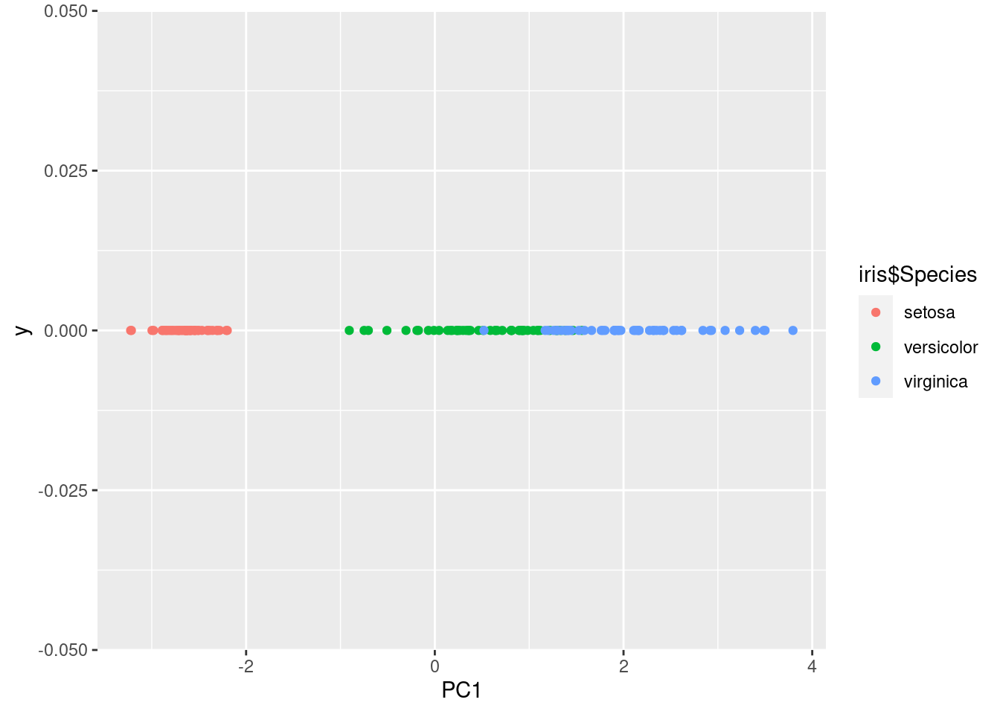
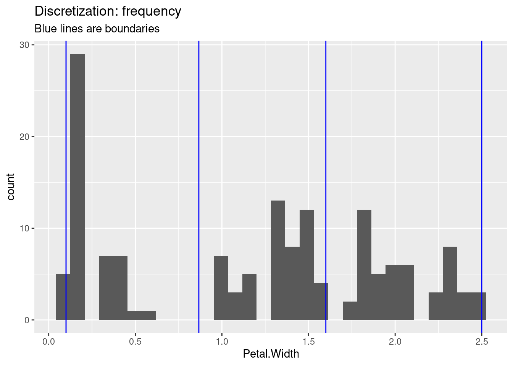

- Preface
- 1 Introduction
- 2 Data
- 3 Classification: Basic Concepts and Techniques
- 4 Classification: Alternative Techniques
- 5 Association Analysis: Basic Concepts and Algorithms
- 6 Association Analysis: Advanced Concepts
- 7 Clustering Analysis
- References
2.5 Features
2.5.1 Dimensionality Reduction
2.5.1.1 Principal Components Analysis (PCA)
PCA calculates principal components (a new orthonormal basis vectors in the data space) from data points such that the first principal component explains the most variability in the data, the second the next most and so on. In data analysis, PCA is used to project high-dimensional data points onto the first few (typically two) principal components for visualization as a scatter plot and as preprocessing for modeling (e.g., before k-means clustering). Points that are closer together in the high-dimensional space, tend also be closer together in the lower-dimensional space,
Look at the 3d data using an interactive 3d plot (needs package plotly). However, 3d plots are hard to print out and the iris data is actually in 4 dimensions.
##library(plotly) # I don't load the package because it's namespace clashes with select in dplyr.
plotly::plot_ly(iris, x = ~Sepal.Length, y = ~Petal.Length, z = ~Sepal.Width,
size = ~Petal.Width, color = ~Species, type="scatter3d")## No scatter3d mode specifed:
## Setting the mode to markers
## Read more about this attribute -> https://plotly.com/r/reference/#scatter-mode## Warning: `line.width` does not currently support
## multiple values.
## Warning: `line.width` does not currently support
## multiple values.
## Warning: `line.width` does not currently support
## multiple values.Calculate the principal components using prcomp()
pc <- iris %>% select(-Species) %>% as.matrix() %>% prcomp()
summary(pc)## Importance of components:
## PC1 PC2 PC3 PC4
## Standard deviation 2.056 0.4926 0.2797 0.15439
## Proportion of Variance 0.925 0.0531 0.0171 0.00521
## Cumulative Proportion 0.925 0.9777 0.9948 1.00000How important is each principal component can also be seen using a scree plot. The plot shows how much variability in the data is explained by each additional principal component.
plot(pc, type = "line")
Note: For the iris data, the first principal component (PC1) explains most of the variability in the data.
Inspect the raw object (display structure)
str(pc)## List of 5
## $ sdev : num [1:4] 2.056 0.493 0.28 0.154
## $ rotation: num [1:4, 1:4] 0.3614 -0.0845 0.8567 0.3583 -0.6566 ...
## ..- attr(*, "dimnames")=List of 2
## .. ..$ : chr [1:4] "Sepal.Length" "Sepal.Width" "Petal.Length" "Petal.Width"
## .. ..$ : chr [1:4] "PC1" "PC2" "PC3" "PC4"
## $ center : Named num [1:4] 5.84 3.06 3.76 1.2
## ..- attr(*, "names")= chr [1:4] "Sepal.Length" "Sepal.Width" "Petal.Length" "Petal.Width"
## $ scale : logi FALSE
## $ x : num [1:150, 1:4] -2.68 -2.71 -2.89 -2.75 -2.73 ...
## ..- attr(*, "dimnames")=List of 2
## .. ..$ : NULL
## .. ..$ : chr [1:4] "PC1" "PC2" "PC3" "PC4"
## - attr(*, "class")= chr "prcomp"We can display the data points projected on the first two principal components.
ggplot(as_tibble(pc$x), aes(x = PC1, y = PC2, color = iris$Species)) + geom_point()
Since the first principal component represents most of the variability, we can also project the data only on PC1.
ggplot(as_tibble(pc$x), aes(x = PC1, y = 0, color = iris$Species)) + geom_point()
Plot the projected data and add the original axes as arrows. This is called a biplot. If old and new axes point roughly in the same direction, then they are correlated (linearly dependent).
library(factoextra)## Welcome! Want to learn more? See two factoextra-related books at https://goo.gl/ve3WBafviz_pca(pc)
fviz_pca_var(pc)
Another popular method to project data in lower dimensions for visualization is t-distributed stochastic neighbor embedding (t-SNE) available in package Rtsne.
2.5.1.2 Multi-Dimensional Scaling (MDS)
MDS is similar to PCA. Instead of data points, it takes pairwise distances (i.e., a distance matrix) and produces a space where points are placed to represent these distances as well as possible. The axis in this space are called components and are similar to the principal components in PCA. Let’s calculate distances in the 4-d space of iris.
d <- iris %>% select(-Species) %>% dist()and do metric (classic) MDS to reconstruct a 2-d space.
fit <- cmdscale(d, k = 2)
colnames(fit) <- c("comp1", "comp2")
fit <- as_tibble(fit)
ggplot(fit, aes(x = comp1, y = comp2, color = iris$Species)) + geom_point()
2.5.1.3 Non-Parametric Multidimensional Scaling
Non-parametric multidimensional scaling performs MDS while relaxing the need of linear relationships. Methods are available in package MASS as functions
isoMDS and sammon.
2.5.2 Feature Selection
We will talk about feature selection when we discuss classification models.
2.5.3 Discretize Features
ggplot(iris, aes(x = Petal.Width, y = 1:150)) + geom_point()
A histogram is a better visualization for the distribution of a single variable.
ggplot(iris, aes(Petal.Width)) + geom_histogram()## `stat_bin()` using `bins = 30`. Pick better value
## with `binwidth`.
Equal interval width
iris %>% pull(Sepal.Width) %>% cut(breaks=3)## [1] (2.8,3.6] (2.8,3.6] (2.8,3.6] (2.8,3.6] (2.8,3.6]
## [6] (3.6,4.4] (2.8,3.6] (2.8,3.6] (2.8,3.6] (2.8,3.6]
## [11] (3.6,4.4] (2.8,3.6] (2.8,3.6] (2.8,3.6] (3.6,4.4]
## [16] (3.6,4.4] (3.6,4.4] (2.8,3.6] (3.6,4.4] (3.6,4.4]
## [21] (2.8,3.6] (3.6,4.4] (2.8,3.6] (2.8,3.6] (2.8,3.6]
## [26] (2.8,3.6] (2.8,3.6] (2.8,3.6] (2.8,3.6] (2.8,3.6]
## [31] (2.8,3.6] (2.8,3.6] (3.6,4.4] (3.6,4.4] (2.8,3.6]
## [36] (2.8,3.6] (2.8,3.6] (2.8,3.6] (2.8,3.6] (2.8,3.6]
## [41] (2.8,3.6] (2,2.8] (2.8,3.6] (2.8,3.6] (3.6,4.4]
## [46] (2.8,3.6] (3.6,4.4] (2.8,3.6] (3.6,4.4] (2.8,3.6]
## [51] (2.8,3.6] (2.8,3.6] (2.8,3.6] (2,2.8] (2,2.8]
## [56] (2,2.8] (2.8,3.6] (2,2.8] (2.8,3.6] (2,2.8]
## [61] (2,2.8] (2.8,3.6] (2,2.8] (2.8,3.6] (2.8,3.6]
## [66] (2.8,3.6] (2.8,3.6] (2,2.8] (2,2.8] (2,2.8]
## [71] (2.8,3.6] (2,2.8] (2,2.8] (2,2.8] (2.8,3.6]
## [76] (2.8,3.6] (2,2.8] (2.8,3.6] (2.8,3.6] (2,2.8]
## [81] (2,2.8] (2,2.8] (2,2.8] (2,2.8] (2.8,3.6]
## [86] (2.8,3.6] (2.8,3.6] (2,2.8] (2.8,3.6] (2,2.8]
## [91] (2,2.8] (2.8,3.6] (2,2.8] (2,2.8] (2,2.8]
## [96] (2.8,3.6] (2.8,3.6] (2.8,3.6] (2,2.8] (2,2.8]
## [101] (2.8,3.6] (2,2.8] (2.8,3.6] (2.8,3.6] (2.8,3.6]
## [106] (2.8,3.6] (2,2.8] (2.8,3.6] (2,2.8] (2.8,3.6]
## [111] (2.8,3.6] (2,2.8] (2.8,3.6] (2,2.8] (2,2.8]
## [116] (2.8,3.6] (2.8,3.6] (3.6,4.4] (2,2.8] (2,2.8]
## [121] (2.8,3.6] (2,2.8] (2,2.8] (2,2.8] (2.8,3.6]
## [126] (2.8,3.6] (2,2.8] (2.8,3.6] (2,2.8] (2.8,3.6]
## [131] (2,2.8] (3.6,4.4] (2,2.8] (2,2.8] (2,2.8]
## [136] (2.8,3.6] (2.8,3.6] (2.8,3.6] (2.8,3.6] (2.8,3.6]
## [141] (2.8,3.6] (2.8,3.6] (2,2.8] (2.8,3.6] (2.8,3.6]
## [146] (2.8,3.6] (2,2.8] (2.8,3.6] (2.8,3.6] (2.8,3.6]
## Levels: (2,2.8] (2.8,3.6] (3.6,4.4]Other methods (equal frequency, k-means clustering, etc.)
library(arules)## Loading required package: Matrix##
## Attaching package: 'Matrix'## The following objects are masked from 'package:tidyr':
##
## expand, pack, unpack##
## Attaching package: 'arules'## The following object is masked from 'package:dplyr':
##
## recode## The following objects are masked from 'package:base':
##
## abbreviate, writeiris %>% pull(Petal.Width) %>% discretize(method = "interval", breaks = 3)## [1] [0.1,0.9) [0.1,0.9) [0.1,0.9) [0.1,0.9) [0.1,0.9)
## [6] [0.1,0.9) [0.1,0.9) [0.1,0.9) [0.1,0.9) [0.1,0.9)
## [11] [0.1,0.9) [0.1,0.9) [0.1,0.9) [0.1,0.9) [0.1,0.9)
## [16] [0.1,0.9) [0.1,0.9) [0.1,0.9) [0.1,0.9) [0.1,0.9)
## [21] [0.1,0.9) [0.1,0.9) [0.1,0.9) [0.1,0.9) [0.1,0.9)
## [26] [0.1,0.9) [0.1,0.9) [0.1,0.9) [0.1,0.9) [0.1,0.9)
## [31] [0.1,0.9) [0.1,0.9) [0.1,0.9) [0.1,0.9) [0.1,0.9)
## [36] [0.1,0.9) [0.1,0.9) [0.1,0.9) [0.1,0.9) [0.1,0.9)
## [41] [0.1,0.9) [0.1,0.9) [0.1,0.9) [0.1,0.9) [0.1,0.9)
## [46] [0.1,0.9) [0.1,0.9) [0.1,0.9) [0.1,0.9) [0.1,0.9)
## [51] [0.9,1.7) [0.9,1.7) [0.9,1.7) [0.9,1.7) [0.9,1.7)
## [56] [0.9,1.7) [0.9,1.7) [0.9,1.7) [0.9,1.7) [0.9,1.7)
## [61] [0.9,1.7) [0.9,1.7) [0.9,1.7) [0.9,1.7) [0.9,1.7)
## [66] [0.9,1.7) [0.9,1.7) [0.9,1.7) [0.9,1.7) [0.9,1.7)
## [71] [1.7,2.5] [0.9,1.7) [0.9,1.7) [0.9,1.7) [0.9,1.7)
## [76] [0.9,1.7) [0.9,1.7) [1.7,2.5] [0.9,1.7) [0.9,1.7)
## [81] [0.9,1.7) [0.9,1.7) [0.9,1.7) [0.9,1.7) [0.9,1.7)
## [86] [0.9,1.7) [0.9,1.7) [0.9,1.7) [0.9,1.7) [0.9,1.7)
## [91] [0.9,1.7) [0.9,1.7) [0.9,1.7) [0.9,1.7) [0.9,1.7)
## [96] [0.9,1.7) [0.9,1.7) [0.9,1.7) [0.9,1.7) [0.9,1.7)
## [101] [1.7,2.5] [1.7,2.5] [1.7,2.5] [1.7,2.5] [1.7,2.5]
## [106] [1.7,2.5] [1.7,2.5] [1.7,2.5] [1.7,2.5] [1.7,2.5]
## [111] [1.7,2.5] [1.7,2.5] [1.7,2.5] [1.7,2.5] [1.7,2.5]
## [116] [1.7,2.5] [1.7,2.5] [1.7,2.5] [1.7,2.5] [0.9,1.7)
## [121] [1.7,2.5] [1.7,2.5] [1.7,2.5] [1.7,2.5] [1.7,2.5]
## [126] [1.7,2.5] [1.7,2.5] [1.7,2.5] [1.7,2.5] [0.9,1.7)
## [131] [1.7,2.5] [1.7,2.5] [1.7,2.5] [0.9,1.7) [0.9,1.7)
## [136] [1.7,2.5] [1.7,2.5] [1.7,2.5] [1.7,2.5] [1.7,2.5]
## [141] [1.7,2.5] [1.7,2.5] [1.7,2.5] [1.7,2.5] [1.7,2.5]
## [146] [1.7,2.5] [1.7,2.5] [1.7,2.5] [1.7,2.5] [1.7,2.5]
## attr(,"discretized:breaks")
## [1] 0.1 0.9 1.7 2.5
## attr(,"discretized:method")
## [1] interval
## Levels: [0.1,0.9) [0.9,1.7) [1.7,2.5]iris %>% pull(Petal.Width) %>% discretize(method = "frequency", breaks = 3)## [1] [0.1,0.867) [0.1,0.867) [0.1,0.867) [0.1,0.867)
## [5] [0.1,0.867) [0.1,0.867) [0.1,0.867) [0.1,0.867)
## [9] [0.1,0.867) [0.1,0.867) [0.1,0.867) [0.1,0.867)
## [13] [0.1,0.867) [0.1,0.867) [0.1,0.867) [0.1,0.867)
## [17] [0.1,0.867) [0.1,0.867) [0.1,0.867) [0.1,0.867)
## [21] [0.1,0.867) [0.1,0.867) [0.1,0.867) [0.1,0.867)
## [25] [0.1,0.867) [0.1,0.867) [0.1,0.867) [0.1,0.867)
## [29] [0.1,0.867) [0.1,0.867) [0.1,0.867) [0.1,0.867)
## [33] [0.1,0.867) [0.1,0.867) [0.1,0.867) [0.1,0.867)
## [37] [0.1,0.867) [0.1,0.867) [0.1,0.867) [0.1,0.867)
## [41] [0.1,0.867) [0.1,0.867) [0.1,0.867) [0.1,0.867)
## [45] [0.1,0.867) [0.1,0.867) [0.1,0.867) [0.1,0.867)
## [49] [0.1,0.867) [0.1,0.867) [0.867,1.6) [0.867,1.6)
## [53] [0.867,1.6) [0.867,1.6) [0.867,1.6) [0.867,1.6)
## [57] [1.6,2.5] [0.867,1.6) [0.867,1.6) [0.867,1.6)
## [61] [0.867,1.6) [0.867,1.6) [0.867,1.6) [0.867,1.6)
## [65] [0.867,1.6) [0.867,1.6) [0.867,1.6) [0.867,1.6)
## [69] [0.867,1.6) [0.867,1.6) [1.6,2.5] [0.867,1.6)
## [73] [0.867,1.6) [0.867,1.6) [0.867,1.6) [0.867,1.6)
## [77] [0.867,1.6) [1.6,2.5] [0.867,1.6) [0.867,1.6)
## [81] [0.867,1.6) [0.867,1.6) [0.867,1.6) [1.6,2.5]
## [85] [0.867,1.6) [1.6,2.5] [0.867,1.6) [0.867,1.6)
## [89] [0.867,1.6) [0.867,1.6) [0.867,1.6) [0.867,1.6)
## [93] [0.867,1.6) [0.867,1.6) [0.867,1.6) [0.867,1.6)
## [97] [0.867,1.6) [0.867,1.6) [0.867,1.6) [0.867,1.6)
## [101] [1.6,2.5] [1.6,2.5] [1.6,2.5] [1.6,2.5]
## [105] [1.6,2.5] [1.6,2.5] [1.6,2.5] [1.6,2.5]
## [109] [1.6,2.5] [1.6,2.5] [1.6,2.5] [1.6,2.5]
## [113] [1.6,2.5] [1.6,2.5] [1.6,2.5] [1.6,2.5]
## [117] [1.6,2.5] [1.6,2.5] [1.6,2.5] [0.867,1.6)
## [121] [1.6,2.5] [1.6,2.5] [1.6,2.5] [1.6,2.5]
## [125] [1.6,2.5] [1.6,2.5] [1.6,2.5] [1.6,2.5]
## [129] [1.6,2.5] [1.6,2.5] [1.6,2.5] [1.6,2.5]
## [133] [1.6,2.5] [0.867,1.6) [0.867,1.6) [1.6,2.5]
## [137] [1.6,2.5] [1.6,2.5] [1.6,2.5] [1.6,2.5]
## [141] [1.6,2.5] [1.6,2.5] [1.6,2.5] [1.6,2.5]
## [145] [1.6,2.5] [1.6,2.5] [1.6,2.5] [1.6,2.5]
## [149] [1.6,2.5] [1.6,2.5]
## attr(,"discretized:breaks")
## [1] 0.1000 0.8667 1.6000 2.5000
## attr(,"discretized:method")
## [1] frequency
## Levels: [0.1,0.867) [0.867,1.6) [1.6,2.5]iris %>% pull(Petal.Width) %>% discretize(method = "cluster", breaks = 3)## [1] [0.1,0.792) [0.1,0.792) [0.1,0.792)
## [4] [0.1,0.792) [0.1,0.792) [0.1,0.792)
## [7] [0.1,0.792) [0.1,0.792) [0.1,0.792)
## [10] [0.1,0.792) [0.1,0.792) [0.1,0.792)
## [13] [0.1,0.792) [0.1,0.792) [0.1,0.792)
## [16] [0.1,0.792) [0.1,0.792) [0.1,0.792)
## [19] [0.1,0.792) [0.1,0.792) [0.1,0.792)
## [22] [0.1,0.792) [0.1,0.792) [0.1,0.792)
## [25] [0.1,0.792) [0.1,0.792) [0.1,0.792)
## [28] [0.1,0.792) [0.1,0.792) [0.1,0.792)
## [31] [0.1,0.792) [0.1,0.792) [0.1,0.792)
## [34] [0.1,0.792) [0.1,0.792) [0.1,0.792)
## [37] [0.1,0.792) [0.1,0.792) [0.1,0.792)
## [40] [0.1,0.792) [0.1,0.792) [0.1,0.792)
## [43] [0.1,0.792) [0.1,0.792) [0.1,0.792)
## [46] [0.1,0.792) [0.1,0.792) [0.1,0.792)
## [49] [0.1,0.792) [0.1,0.792) [0.792,1.71)
## [52] [0.792,1.71) [0.792,1.71) [0.792,1.71)
## [55] [0.792,1.71) [0.792,1.71) [0.792,1.71)
## [58] [0.792,1.71) [0.792,1.71) [0.792,1.71)
## [61] [0.792,1.71) [0.792,1.71) [0.792,1.71)
## [64] [0.792,1.71) [0.792,1.71) [0.792,1.71)
## [67] [0.792,1.71) [0.792,1.71) [0.792,1.71)
## [70] [0.792,1.71) [1.71,2.5] [0.792,1.71)
## [73] [0.792,1.71) [0.792,1.71) [0.792,1.71)
## [76] [0.792,1.71) [0.792,1.71) [0.792,1.71)
## [79] [0.792,1.71) [0.792,1.71) [0.792,1.71)
## [82] [0.792,1.71) [0.792,1.71) [0.792,1.71)
## [85] [0.792,1.71) [0.792,1.71) [0.792,1.71)
## [88] [0.792,1.71) [0.792,1.71) [0.792,1.71)
## [91] [0.792,1.71) [0.792,1.71) [0.792,1.71)
## [94] [0.792,1.71) [0.792,1.71) [0.792,1.71)
## [97] [0.792,1.71) [0.792,1.71) [0.792,1.71)
## [100] [0.792,1.71) [1.71,2.5] [1.71,2.5]
## [103] [1.71,2.5] [1.71,2.5] [1.71,2.5]
## [106] [1.71,2.5] [0.792,1.71) [1.71,2.5]
## [109] [1.71,2.5] [1.71,2.5] [1.71,2.5]
## [112] [1.71,2.5] [1.71,2.5] [1.71,2.5]
## [115] [1.71,2.5] [1.71,2.5] [1.71,2.5]
## [118] [1.71,2.5] [1.71,2.5] [0.792,1.71)
## [121] [1.71,2.5] [1.71,2.5] [1.71,2.5]
## [124] [1.71,2.5] [1.71,2.5] [1.71,2.5]
## [127] [1.71,2.5] [1.71,2.5] [1.71,2.5]
## [130] [0.792,1.71) [1.71,2.5] [1.71,2.5]
## [133] [1.71,2.5] [0.792,1.71) [0.792,1.71)
## [136] [1.71,2.5] [1.71,2.5] [1.71,2.5]
## [139] [1.71,2.5] [1.71,2.5] [1.71,2.5]
## [142] [1.71,2.5] [1.71,2.5] [1.71,2.5]
## [145] [1.71,2.5] [1.71,2.5] [1.71,2.5]
## [148] [1.71,2.5] [1.71,2.5] [1.71,2.5]
## attr(,"discretized:breaks")
## [1] 0.1000 0.7915 1.7055 2.5000
## attr(,"discretized:method")
## [1] cluster
## Levels: [0.1,0.792) [0.792,1.71) [1.71,2.5]ggplot(iris, aes(Petal.Width)) + geom_histogram() +
geom_vline(xintercept =
iris %>% pull(Petal.Width) %>% discretize(method = "interval", breaks = 3, onlycuts = TRUE),
color = "blue") +
labs(title = "Discretization: interval", subtitle = "Blue lines are boundaries")## `stat_bin()` using `bins = 30`. Pick better value
## with `binwidth`.
ggplot(iris, aes(Petal.Width)) + geom_histogram() +
geom_vline(xintercept =
iris %>% pull(Petal.Width) %>% discretize(method = "frequency", breaks = 3, onlycuts = TRUE),
color = "blue") +
labs(title = "Discretization: frequency", subtitle = "Blue lines are boundaries")## `stat_bin()` using `bins = 30`. Pick better value
## with `binwidth`.
ggplot(iris, aes(Petal.Width)) + geom_histogram() +
geom_vline(xintercept =
iris %>% pull(Petal.Width) %>% discretize(method = "cluster", breaks = 3, onlycuts = TRUE),
color = "blue") +
labs(title = "Discretization: cluster", subtitle = "Blue lines are boundaries")## `stat_bin()` using `bins = 30`. Pick better value
## with `binwidth`.
2.5.4 Standardize Data (Z-Scores)
Standardize the scale of features to make them comparable. For each column the mean is subtracted (centering) and it is divided by the standard deviation (scaling). Now most values should be in [-3,3].
Note: tidyverse currently does not have a simple scale function, so I make one that provides a wrapper for the standard scale function in R:
scale_numeric <- function(x) x %>% mutate_if(is.numeric, function(y) as.vector(scale(y)))
iris.scaled <- iris %>% scale_numeric()
iris.scaled## # A tibble: 150 x 5
## Sepal.Length Sepal.Width Petal.Length Petal.Width
## <dbl> <dbl> <dbl> <dbl>
## 1 -0.898 1.02 -1.34 -1.31
## 2 -1.14 -0.132 -1.34 -1.31
## 3 -1.38 0.327 -1.39 -1.31
## 4 -1.50 0.0979 -1.28 -1.31
## 5 -1.02 1.25 -1.34 -1.31
## 6 -0.535 1.93 -1.17 -1.05
## 7 -1.50 0.786 -1.34 -1.18
## 8 -1.02 0.786 -1.28 -1.31
## 9 -1.74 -0.361 -1.34 -1.31
## 10 -1.14 0.0979 -1.28 -1.44
## # … with 140 more rows, and 1 more variable:
## # Species <fct>summary(iris.scaled)## Sepal.Length Sepal.Width Petal.Length
## Min. :-1.8638 Min. :-2.426 Min. :-1.562
## 1st Qu.:-0.8977 1st Qu.:-0.590 1st Qu.:-1.222
## Median :-0.0523 Median :-0.132 Median : 0.335
## Mean : 0.0000 Mean : 0.000 Mean : 0.000
## 3rd Qu.: 0.6722 3rd Qu.: 0.557 3rd Qu.: 0.760
## Max. : 2.4837 Max. : 3.080 Max. : 1.780
## Petal.Width Species
## Min. :-1.442 setosa :50
## 1st Qu.:-1.180 versicolor:50
## Median : 0.132 virginica :50
## Mean : 0.000
## 3rd Qu.: 0.788
## Max. : 1.706